Using The LOCKSS Plugin Generation Tool
The LOCKSS Team
7/21/04
Introduction
Every journal that LOCKSS might preserve has some peculiarities; some
are more peculiar than others. The LOCKSS daemon gets its knowledge of
these peculiarities, be they large or small, from a plugin. The plugin for a complex
journal is written mostly in Java, but for most simple journals the
plugin is an XML file which is interpreted by a generic, or definable, plugin written by the
LOCKSS team. Here we introduce the LOCKSS plugin generation tool, which
provides a user interface that allows
you to create and test a plugin for most simple journals with no
programming. The user provides input describing the chosen journal, the
tool outputs a definition of the plugin for the chosen journal in XML.
In cases where a single publishing platform, for example HighWire
Press, publishes a large number of journals a single (complex) plugin
will support all of the journals. This document focuses on the simpler
journals, whose plugin is within the capabilities of the plugin
generation tool, so we assume below that there is a single plugin for
each journal.
Eventually, the LOCKSS daemon will obtain this XML file via a plugin registry, a search facility
linking bibliographic information about journals to the appropriate
plugin. Until the plugin registry is working, the XML files defining
plugins must be e-mailed to lockssbeta "at" lockss.org. After testing,
the LOCKSS team will include them in the daemon distribution.
One major function of the plugin for a journal is to divide the
journal's content into manageable chunks called archival units (AUs). Typically, an
AU will consist of a year's run of a journal, or a volume. Among the
information the plugin needs about an AU is its crawl rules. These tell
the LOCKSS web crawler where to stop when it is trying to find newly
published content to collect. Other information includes the
publisher manifest page, which tells the crawler where to start,
and the crawl interval, which tells it how often to start. We use
examples of some real journals to show how you find this information
from the journal's web site, how you feed it into the tool to generate
a suitable plugin, and how you test the plugin to be sure you have the
information correct.
Obtaining and Running The Tool
The plugin tool is available in three ways, on CD, by download or via
CVS:
- The CD, whose .iso image is available from Sourceforge(plugin-tool-0.6.3.iso, plugin-tool-0.6.3.iso.md5) and runs on both Windows and Linux/x86:
- On Windows the tool will automatically run when the CD is
inserted.
- On Linux/x86 you should navigate to the linux folder on the CD
and click on the runtool icon.
- You can download two versions:
Unix: plugin-tool-0.6.3.tgz,
plugin-tool-0.6.3.tgz.md5
Windows: plugin-tool-0.6.3.zip,
plugin-tool-0.6.3.zip.md5
Download and unpack the appropriate one into a directory (folder) change into that directory and
invoke the script in that directory that runs the tool, runtool for
Unix and runtool.bat for
Windows.
- You can check out the lockss-daemon
project from cvs.sourceforge.net:/cvsroot/lockss
and run the command ant run-tool
-Dclass=org.lockss.devtools.plugindef.PluginDefinerApp.
If you have encounter any bugs or have feature requests, please put them in our Sourceforge Issue Trackers, selecting "Plug-in Tool" as the category.
Before You Start Clicking
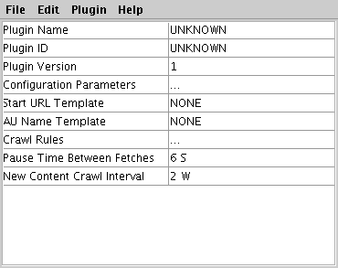When the generator
starts you will see a window which contains the
fields needed to define the
plug-in, like this:
The
pull-down menus for this window are:
- File -> New, Open, Save, Save As, Exit - these allow you to
load and save the XML files defining the plugin.
- Edit -> Cut, Copy, Paste, Delete - these operate on editable
text fields.
- Plugin -> Expert Mode, Test Crawl Rules ..., Test Filters -
these are described below.
- Help -> About - Brings up version and copyright info.
Expert Mode allows more control over the plugin, the details are here. In most cases you will not need it.
Instead you
will define your plugin by filling in the fields in the window in turn.
They are:
- Plugin Name: The human-readable name that the plugin will appear
under in
the
configuration menu of the LOCKSS administrative user interface. Spaces
are OK here.
- Plugin ID: the Java class name for the plugin.
- Plugin Version: A version number that differentiates different
versions of the same plugin. It should start at 1.
- Configuration Parameters: This defines the set of
parameters that the plugin will use to identify and differentiate
between each AU that uses the plugin.
- AU Name Template: This template tells the plugin how to use the
Configuration Parameters to create the name of
each AU using the plugin used by the LOCKSS administrative UI.
- Start URL Template: This template tells the plugin where on the
publisher's web site to find the publisher
manifest page for each AU of the journal.
- Crawl Rules: These rules define the boundaries of an archival unit (AU) in the journal's
web site. An AU is normally a year's run or a volume of the journal.
- Pause Time Between Fetches: The time for which the LOCKSS daemon
waits after fetching each page from the publisher's web site.
- New Content Crawl Interval: The time between attempts by the
LOCKSS daemon to find new content on the publisher's web site.
Example Journal
We will use the real journal Disputatio
as an example. Its "home page" is at http://disputatio.com.
Its publisher manifest page for 2004 is at http://disputatio.com/lockss2004.html.
A typical article from 2004 is at http://disputatio.com/articles/016-3.pdf
- it is the third article in issue number 16 of the journal. That's all
the information we need to get started.
A more detailed discussion of the information you might need is in
the document "Writing a Simple
Plug-in".
Defining a basic plug-in
- We will call the Disputatio plugin "Disputatio". Type that into
the "Plugin Name" field.
- The Java name for the plugin will be the reverse of your
institution's DNS domain followed plugin followed by a class name. For
example, ours will be called org.lockss.plugin.DisputatioPlugin.
Click on the NONE and type it, substituting your DNS name for org.lockss.
- We are defining version 1 of the Disputatio plugin, so make sure
the version field is 1.
- 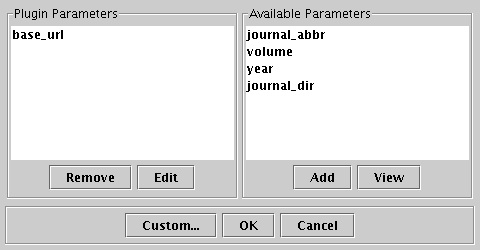Now click on the row of dots beside "Configuration
Parameters". A
window pops up looking like this: In this case, the only
parameters we need the
administrator to define are the base_url,
which is
always required so that the plugin can find the journal (it will be http://disputatio.com/), and the year
(it will be 2004, etc.), so it
can find the
publisher
manifest pages (at http//disputatio.com/lockss2004.html,
etc.). Select year and click
Add.
- 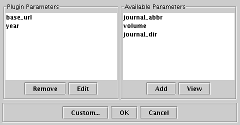The window should
look like this: Now click OK.
- 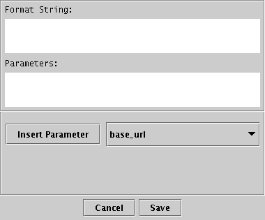Now we use these
parameters to define the Start URL Template, which
tells the
plugin where to find the publisher manifest page. Click on the NONE
beside it. A template editor
window pops up, looking like this:
- 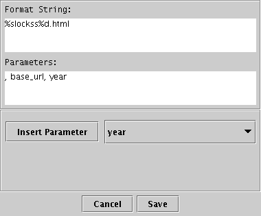Choose "Base URL" from the pull-down menu and click
"Insert Parameter". Choose "String Literal" and click "Insert
Parameter"; type lockss into
the popup then click "OK". Choose "year" from the pull-down menu and
click "Insert Parameter". Choose "String Literal" and click
"Insert Parameter"; type .html
into the popup then click "OK". The "Editor View" tab shows you the
resulting format string into which the
parameters in blue are
substituted to obtain, in our case, http://disputatio.com/lockss2004.html
etc.
Click Save.
- 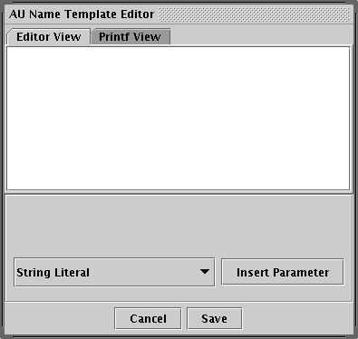Next we specify the
name that each AU
captured
by this plugin will have in the LOCKSS Administrative user interface.
Click on the NONE beside AU Name Template to get a template editor
window that looks like this:
- 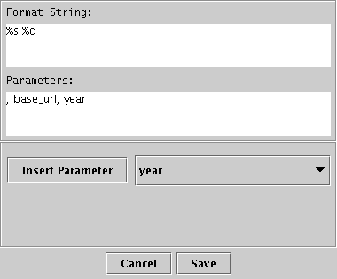We want
the name of the 2004 AU to be http://disputatio.com
2004, i.e. the base_url
followed by a space
followed by the year.
Choose "Base URL" from the pull-down menu, click "Insert Parameter".
Choose "String Literal" from the pull-down menu, click "Insert
Parameter", type a space in the popup then click "OK". Choose year from the pull-down menu, click
"Insert Parameter" and
the
window looks like this:
The base_url parameter is
substituted
for the %s and the year for
the %d to achieve what we want. Click Save.
- Next we need to specify a series of crawl rules that the crawler
applies
in order to each URL, starting with the publisher manifest page's URL
and continuing with the URLs found in it, and the URLs found in those
pages, and so on. Click on the row of dots beside to get a window that
looks
like this: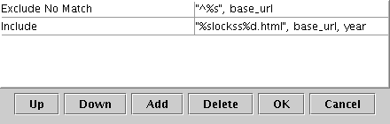 The left
column contains actions that are taken if the URL matches the pattern
in the right column (see Roundup issue 993). Two rules are
pre-specified for
you; they will be needed in almost every case. The first says that
anything that doesn't start with base_url (in our case, http://disputatio.com/) will
be excluded. The second says that the
publisher manifest page will be included. The rules are in the form of
a printf format string which has the configuration parameters for the
AU
substituted into it before being used as a regular expression pattern.
Regular expressions are full of pitfalls for the unwary. They use many
meta characters with special meanings (the ^ at the beginning of the
first rule is an example, it forces the pattern to be matched only if
it starts at the beginning of the URL). So the combination of format
string and regular expression would be hard to type by hand. The tool
makes this easy by building them up in stages. If you really want the
gory details, look here.
- Now we
want to make sure that any articles linked from the manifest page are
included. A
typical URL we want to include is http://disputatio.com/articles/016-3.pdf
- so we want the pattern to match the base_url
followed by the text articles/
followed by anything followed by .pdf.
- 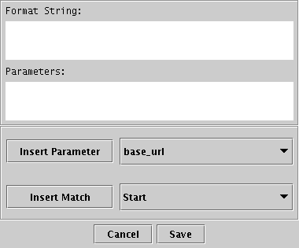Click Add to get a default rule to edit. It will have
the
Include action, which is what we want, and the NONE pattern, which we
edit by clicking on it to get a window that looks like this:
- 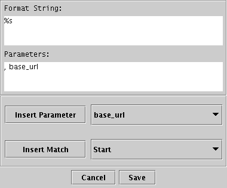Choose "Base URL"
from the "Insert Parameter" pull-down menu and click on "Insert
Parameter" to
start the pattern with base_url,
like this:
- 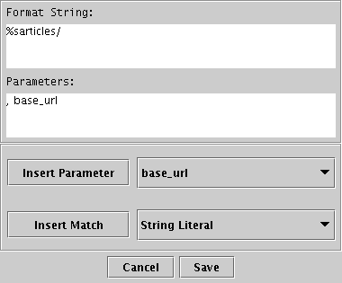Now pull down the menu by
"Insert Match" and choose "String Literal". Click "Insert Match" and a
box pops up into which you type the text you want to match, in the case
articles/. Click OK and the
pattern editor window looks like this:
- 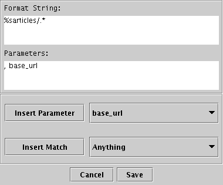Next we want to match anything, so pull down the menu by
"Insert
Match", choose "Anything" and click "Insert Match". The pattern
editor window looks like:
Note the .* you just inserted. This is a regular expression made of two
meta characters. The period matches any single character, the star
means
any sequence of characters matching the previous character which,
because it is a period, matches anything. So .* matches any string of
characters, specifically in our case strings like 016-3.
- 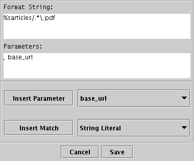Next we want to match .pdf.
Pull down the menu by "Insert Match", choose "String Literal" and click
Insert Match. A box pops up into which you type .pdf. Click OK. The pattern editor
window now looks like:
Note the backslash (\) before the period before pdf. Period is a regular expression
meta character, so it must be escaped with a backslash beforehand if it
is to match an actual period. The tool generates these "escape"
meta characters automatically.
- 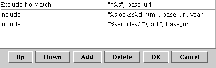Now we're done with
this rule, so click Save. The Crawl Rule
window now looks like this:
- 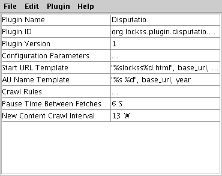We're done for now,
so click OK. The base plugin editor
window
now looks like:
- 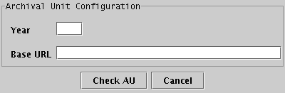We are now ready to
start testing the plugin. Pull
down the
"Plugin" menu and choose "Test Crawl Rules ...". A window pops up that
allows you to provide the configuration parameters you decided earlier
that were needed to identify an AU. Type
values for the configuration parameters, in our case base_url http://disputatio.com/ and year 2004. Note the trailing / on
the base_url. Click "Check AU".
- 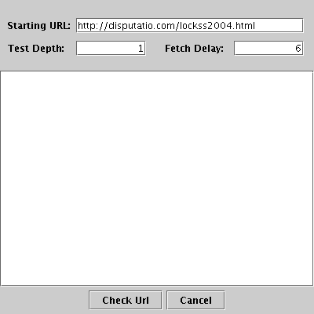Now a window
looking like this pops up with pre-loaded fields for the publisher
manifest page you
want to start testing from, in our case
http://disputation.com/lockss2004.html, the Test Depth (a file
linked from the manifest page has a depth of 1, a page linked from that
page has a depth of 2, and so on) and Fetch Delay (the number of
seconds to pause between fetching pages):
- 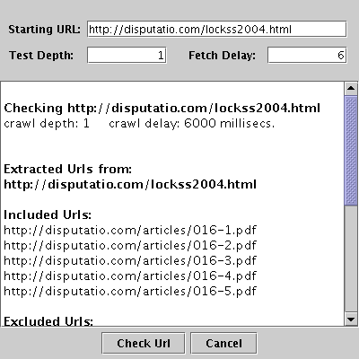Click "Check URL"
to start the test. The test results appear in the scrolling text pane:
- In our case the results pane ends
up containing this. 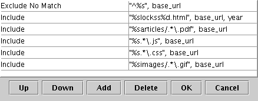You will see that
our rules correctly included all the
articles
and correctly excluded http://lockss.stanford.edu/, but there were some
files excluded that should have been included. We need to add rules
including base_url followed by
anything followed by .js, base_url followed by anything
followed by .css and base_url followed by images/ followed by anything
followed by .gif. Click on the
row of dots by "Crawl Rules" and follow the same process you used to
insert the articles/ rule to
insert these rules. The Crawl Rule window should look like:
- Click OK and test this again. The results pane should contain this. We have correctly included the
articles and the other files.
- Disputatio publishes two issues per year, so checking every three
weeks is excessive. Set the New Content Crawl Interval to 13 weeks.
- Finally, save your plugin as an XML file using Save or Save
As. Submit the
resulting file to the LOCKSS team for testing and inclusion
in the distribution.
Improving the
Design of the Example Plugin
Although the plugin we just defined includes and excludes the correct
files, it does so by explicitly specifying the files on the publisher's
site to include. In most cases it will be better to explicitly specify
the files to exclude, and include everything else. This approach is
more likely to work as the publisher tweaks their site.
Which files on the Disputatio site do we know should be excluded? The
only ones we are sure should be excluded are the "home page" (we know
this will change with every new issue) and the publisher manifest pages
for other AUs (e.g the 2004 AU should not include the 2003 publisher
manifest page). A better plugin design would have rules that:
- Exclude everything not starting with the base_url http://disputatio.com/ (the first
default rule).
- Include the publisher manifest page for this AU (the second
default rule).
- Exclude the publisher manifest pages from other AUs, in our case
everything matching the base_url
followed by the string literal lockss
followed by a number followed by .html.
Although this will match the publisher manifest page for this AU, that
page has already been included so this exclusion rule will not affect
it.
- Exclude the "home page" under both its aliases. First as http://disputatio.com/, i.e. a
pattern starting with base_url
followed by the end of the string. Second as http://disputatio.com/index.html,
i.e. a pattern starting with base_url
followed by the string literal index.html.
Restart the plugin tool and fill in the fields as before until you get
to the Crawl Rules. As before, when you click on the row of dots by
Crawl Rules, the window that pops up will have the first two rules
pre-defined. Now add the extra exclusion rules outlined above:
- Exclude the publisher manifest pages for other AUs by clicking
Add, pulling down the menu from Include and choosing Exclude. Click on
NONE and choose:
- Insert Match, Start
- Insert Match, String Literal, lockss
- Insert Match, Any Number
- Insert Match, String Literal, .html
- Save
- Exclude the home page under its http://disputatio.com/ alias by
clicking Add, pulling down the menu from Include and choosing Exclude.
Click on NONE and choose:
- Insert Match, Start
- Insert Parameter, base_url
- Insert Match, End
- Save
- Exclude the home page under its http://disputatio.com/index.html
alias by clicking Add, pulling
down the menu from Include and choosing Exclude. Click on NONE and
choose:
- Insert Match, Start
- Insert Parameter, base_url
- Insert Match, String Literal, index.html
- Insert Match, End
- 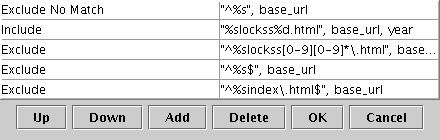The Crawl Rule
window will look like this: Note
the backslashes before the periods in the .html string literals in the
patterns - the tool automatically inserts these to prevent the period
being interpreted as a regular expression meta character.
- The result of testing this set of rules is this. Only the publisher manifest page is
included, because the default
action if no rules are matched is to exclude the URL. We need to add a
rule to include everything that isn't being explicitly excluded. Click
Add. Click on NONE and
choose:
- Insert Match, Start
- Insert Parameter, base_url
- Insert Match, Anything
- 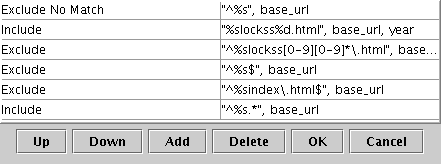Now the Crawl Rule
window will look like this: You
may need to expand the window to see it all (see Roundup issue 990).
The result of testing this set
of crawl rules is this, which is
correct, and less likely than the original example to break as
the publisher changes their site.
A More Complex Example Journal
We will use Early
Modern Literary Studies (EMLS) as an example of a somewhat more
complex journal and thus a somewhat more complex plugin. Its home page
and the base_url is at http://www.shu.ac.uk/emls/. The
publisher manifest page for Volume 9 is at http://www.shu.ac.uk/emls/lockss-volume9.html.
EMLS normally publishes every 4 months but it also publishes "special
editions" on an irregular schedule. Each volume has a table of contents
page, for example http://www.shu.ac.uk/emls/09-3/09-3toc.htm.
The articles in the volume are at URLs like http://www.shu.ac.uk/emls/09-3/finntabl.htm,
i.e. the directory (folder) emls/09-3 contains the pages for volume 9
number 3. We will pretend that this plugin is being developed at
Sheffield Hallam University (http://www.shu.ac.uk)
- Start the tool. Set the Plugin Name to Early Modern Literary Studies and
the Plugin ID to uk.ac.shu.plugin.EMLSPlugin.
- Pop up the Configuration Parameters dialog. Add volume to the set
of configuration parameters, we need it because it is part of the
publisher manifest page URL.
- 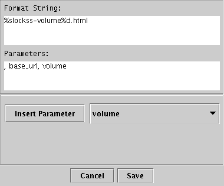Pop up the Start
URL dialog. Insert base_url,
type lockss-volume, insert volume, type .html.
- 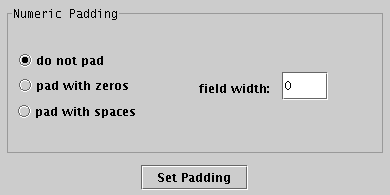When you insert volume you will be asked to set the
padding. In this case we need "do not pad" to get, in our case, just
the 9.
- 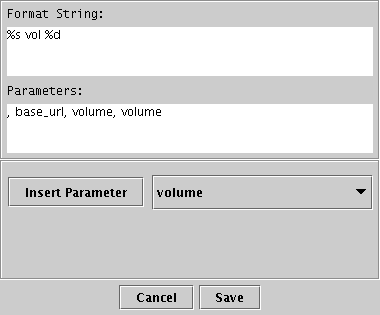Pop up the AU Name
Template dialog. Insert base_url, type space vol space, insert volume and set the
padding to "no padding". The AU name will look like http://www.shu.ac.uk/emls/ vol 9.
- 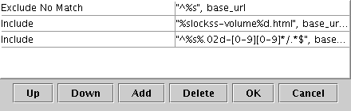Pop up the Crawl
Rules dialog. Include everything that matches Start followed by
base_url followed by volume padded with zeros to a field width of 2
followed by a literal string of -
followed by Any Number followed by a string literal of / followed by Anything followed by
End.
- 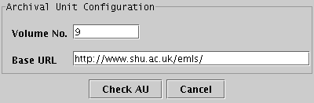Now test this crawl
rule. Configure the AU with the base_url http://www.shu.ac.uk/emls/ and
the volume 9. Start with the default depth of 1.
- The results of this test are here. Note
that the rules have included the table of contents pages for
the three normal issues of Volume 9, but not the table of contents page
for the special issue 13. They have also excluded some decorations that
should be collected. This test did not collect any articles, but we're
not yet sure whether the rules are to blame. The articles are linked
from a page linked from the publisher manifest page, so they will only
be collected at depth 2 or more.
- 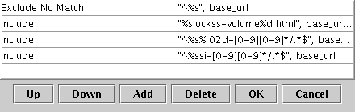Pop up the Crawl
Rules dialog and add a rule that includes the special issue table of
contents for the special issue by including anything that matches Start
followed by base_url followed
by the string literal si-
followed by Any Number followed by the string literal / followed by Anything followed by
End.
- 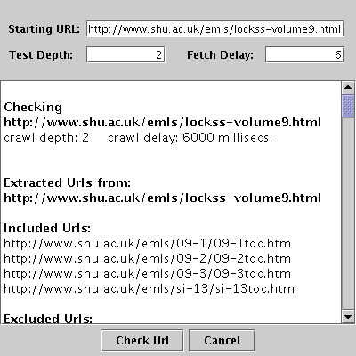Now test these
crawl rules. Configure the AU with the base_url http://www.shu.ac.uk/emls/ and
the volume 9. Set the depth to 2. The test will take a while as it
waits the 6 seconds between fetching each page. The results are here.
- 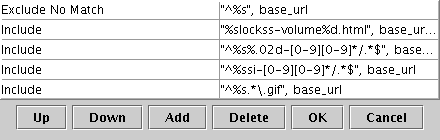Note that we are
still excluding some .gif files that should be included. Pop up the
Crawl Rules dialog and add a rule that matches base_url followed by Anything
followed by the string literal .gif
followed by End,
- 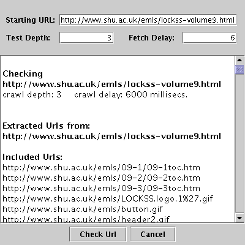Now test these
crawl rules again. Configure the AU with the base_url http://www.shu.ac.uk/emls/
and the volume 9. Set the depth to 3. The test will take 5 minutes or
so as it
waits the 6 seconds between fetching each page. The results are here.
Reviewing this rather long list, it appears that the crawl rules are
now including and excluding the correct files. Note that among the
files included are programs for Windows and the Mac, .gif and .jpg
images and .wrl files.
Evaluating your Journal
Now you are ready to evaluate your chosen journal and collect the
information you need to create a plugin for it. In this section
you will collect the information, in following sections we cover some
of the issues you may run in to that we haven't covered so far. Point
your browser at your journal's home page and start answering the
questions below:
- What is the URL of the journal's home page?
- Is the journal structured as years, volumes, a sequence of
issues, or some other way?
- If there is a volume table of contents page:
- What is the URL for the volume before the current one?
- Does this page link to all other volumes, to the next and
previous volumes, or to no other volumes?
- Chose a typical issue in this volume.
- If there is a year table of contents page:
- What is the URL for the year 2003?
- Does this page link to all other years, to the next and
previous years, or to no other years?
- Choose a typical issue from 2003.
- Is there a table of contents page for your chosen issue? If so:
- What is its URL?
- Does this page link to all other issues, all other issues in
this volume or year, the next and previous issues, or to no other
issues?
- Is there a publisher manifest page? If there is, what is its URL?
You will not be able to finish specifying a plugin for the journal or
test the plugin you have specified until the publisher manifest page is
in place.
- Choose a typical article in your chosen issue. What is its URL?
- Check the format in which the article is delivered (e.g. PDF,
HTML, ...).
- If the article format is HTML does it contain:
- Advertisements? If so, what is the URL for a typical
advertisement?
- Personalizations? If so, what do they look like?
- Images? If so, what is the URL for a typical image? (NB sites
often use images for mathematical and other non-standard characters).
- Links to cited articles in the same journal? If so, what is the
URL for a typical intra-journal citation?
- Links to cited articles in other journals? If so, what is the
URL for a typical inter-journal citation?
- Links to sound clips? If so:
- What is the URL for a typical sound clip?
- Is the sound streamed or downloaded?
- What format is used?
- Links to movies? If so:
- What is the URL for a typical movie?
- Is the movie streamed or downloaded?
- What format is used?
- Javascript? If so, what does the Javascript implement (e.g
search button).
- Links to all other articles in the same volume, year or issue,
the next and previous articles, or to no other articles (except for
citations).
- Hit refresh. Identify any elements on the page that have
changed.
- Review your answers above. If you have pages that link to all
other similar pages rather than simply next and previous similar pages,
or if you have advertisements, personalizations or page elements that
changed on refresh the plugin for your journal is beyond the current
capabilities of the plugin tool (see below).
Please discuss your findings with the LOCKSS team. Otherwise you can
proceed to analyze your journal's URL structure.
Article-ID Journal Structure
Some journals encode the volume and issue in their URLs for articles.
An example we used above is EMLS, whose article URLs are like http://www.shu.ac.uk/emls/09-3/finntabl.htm,
which includes the volume (09) and issue(3). In this case the
crawl rules should include everything that matches Start followed
by
base_url followed by volume
padded with zeros to a field width of 2
followed by a literal string of -
followed by Any Number followed by a string literal of / followed by Anything followed by
End.
Some journals encode the issue but not the year or volume in their URLs
for articles. An example we used above is Disputatio, whose article
URLs are like http://disputatio.com/articles/016-3.pdf
- it is the third article in issue number 16 of the journal. In this
case we want to use the exclusionary crawl rules described above.
Some journals use parameters on their URLs for articles. An example is
Studies in Nolinear Dynamics and Econometrics, hosted on BePress. A
typical article has a URL like http://www.bepress.com/cgi/viewcontent.cgi?article=1208&context=snde.
The parameters are the part after the ?,
in this case the context=
parameter selects the journal among all the journals hosted on BePress
and the article= parameter
selects the individual article from the journal. In this case we
want to exclude everything that doesn't match base_url (http://www.bepress.com/) followed by
cgi/viewcontent.cgi? followed
by anything followed by context=snde.
In some cases of a publisher platform that hosts multiple journals, it
may not be possible to tell from the article URLs whether the article
is part of the journal of interest or not. If this is the case your
journal is beyond the current capabilities of the plugin tool (see
below). Please discuss your findings with the LOCKSS team.
Archival Unit Design
So far, we've assumed that the publisher manifest file is a given. In
practice, its typically the result of a negotiation between the library
responsible for selecting a journal and generating the plugin, and the
publisher. The questions that arise are two-fold:
- How to divide up the publisher's content into Archival Units that
are a manageable size, and which don't last too long? As a rule of
thumb, if the publisher divides the journal into volumes, each volume
should be an AU. Otherwise, each year of the journal should be an AU.
- What to put in the publisher manifest page, and wher to put it?
As a rule of thumb, if each issue of the journal has a table of
contents page, then the publisher manifest page should point to the
table of contents page for each issue that makes up the AU (volume or
year). Otherwise, if there is a single table of contents page for all
issues in a volume or year pointing directly to their contents, the
manifest page should do the same.
Many journals are published using a sophisticated platform, such as HighWire
Press, Atypon, the Open Journal System
or Project Muse. In
these cases a single plugin will generally work for all journals hosted
on the publishing platform. To do this, the configuration parameters
must be sufficient to distinguish between the AUs of the multiple
journals on the platform. There are two common cases:
- Each journal hosted on HighWire Press has its own domain name and
thus its own base_url. For
example, a typical article in the British
Medical Journal has a URL like http://bmj.bmjjournals.com/cgi/content/full/328/7453/1405
in which the base_url is http://bmj.bmjjournals.com/.
A typical article in Proceedings of
the National Academy of Sciences has a URL like http://www.pnas.org/cgi/content/full/97/12/6267
in which the base_url is http://www.pnas.org/.
Both journals are hosted in HighWire Press, as can be seen from
the remainder of the URLs, which have the structure cgi/content/full/<volume>/<issue>/<article-id>.
In this case the confguration parameters needed would be base_url and volume.
- Each journal hosted on Project Muse has a subdirectory of the
single Project Muse site. For example, a typical article in the American Journal of Mathematics has
a URL like http://muse.jhu.edu/journals/american_journal_of_mathematics/v119/119.3li.pdf
in which the base_url is http://muse.jhu.edu/journals/ and
the journal_dir is american_journal_of_mathematics/. A
typical article in Postmodern Culture
has a URL like http://muse.jhu.edu/journals/pmc/v010/10.3chan.html
in which the base_url is http://muse.jhu.edu/journals/ and
the journal_dir is pmc/. Both are hosted on Project
Muse, as can be seen from the shared base_url
and the remainder of the URLs, which start with v<volume>/<volume>.<issue>.
Ideally, the configuration parameters needed should be journal_dir and volume, but for internal reasons the
daemon requires base_url to be
a configuration parameter in all cases.
Crawl Rule Design
In the examples above we have seen two different approaches to
designing crawl rules; inclusionary
rules which primarily list the URLs that should be fetched and exclude
everything else, and exclusionary
rules that primarily list patterns for URLs that should not be fetched
and fetch everything else. Which approach should you choose?
- If the journal has a deep URL structure with a separate directory
for each volume or year, write rules that exclude everything not under
the appropriate volume or year directory. For example, if the URL looks
like http://bmj.bmjjournals.com/cgi/content/full/328/7453/1405
then excluding everything that doesn't match base_url followed by cgi/content/full followed by volume is a good approach.
- If the journal uses parameters in the URL and they include the
volume or year, write rules that exclude everything that doesn't have
the appropriate parameters.
- If the journal has a flat structure, with everything in a single
directory, write rules that include the files that are actually needed.
For example, if the URL looks like http://disputatio.com/articles/016-3.pdf
then including everything that matches base_url
followed by articles/ followed
by a number followed by -
followed by a number followed by anything is a good approach.
- If the journal uses parameters in the URL and they don't include
the volume or year, write rules that include the files that are
actually needed.
What are the plugin generator's limits?
The plugin generation tool has limitations; the plugins for many more
complex journals will exceed them. In general, any plugin that requires
knowledge of the Java classes in the daemon is likely to fall into this
class. Although the "Expert Mode" described in the next section allows
plugins to use some pre-defined Java classes, we aren't yet ready to
explain how you find out what these classes are or what exactly they do
for you. We are still working to expand the capabilities of these
pre-defined classes as we build and test plugins for complex journals;
anyone else attempting a complex journal is also likely at present to
find their capabilities inadequate and need to add to them by writing
Java.
There are a number of warning signs that a journal is complex enough to
be beyond the capabilities of the tool. If you find any of these
features in your chosen journal you should consult the LOCKSS team:
- Some journals add advertisements, personalizations and other
dynamic content to the otherwise static pages. The LOCKSS daemon must filter the pages of these journals
to remove the additions before comparing them with the same pages at
other caches, which will have received different advertisements, etc.
Filtering requires the use of special filter classes and the tool
support for these is incomplete.
- Some journals experience massive spikes of reader interest
immediately a new issue is published. They typically want LOCKSS not to
crawl during these predictable periods of high load, and the LOCKSS
daemon has classes that provide suitable crawl windows in time.
- Some journals do not return normal HTTP error codes, such as 404
for "Page not found" but instead return "helpful" pages with a
different return code. The LOCKSS daemon has classes that recognize
these error pages and re-map them to be conventional errors.
- Some journals have sophisticated access control methods or
crawler traps to prevent theft of their valuable content.
- Some journals have media types for which LOCKSS support is not
yet available, for example streaming media. In some cases, such as Real
Audio, LOCKSS does support non-streamed versions but this again is
beyond the tool's current capability.
Using Expert Mode
Selecting expert mode in the Plug-in Menu will bring up the remaining
parameters:
- Default Crawl Depth: When doing a new content crawl, how many
levels down should it go to check for changes.
The default is 1. It will only check the manifest page for new content.
- Crawl Window Class: The name of the class which encapsulates the
temporal crawl restrictions for the
publishers site.
- Filter Classes: The list of filters by mime-type for filtering
content before performing a hash.
- Crawl Exception Class: The name of the class to be called when
HTTP
errors are generated. This only
needs to be implemented if the site uses HTTP return codes in
non-standard ways.
- Cache Exception Map: A map of return codes to error handlers.
This
only needs to be used if a return code
is being remapped on the site. So returning 404 for some 200 types.
Over-riding plugin settings
Most of the information in a plugin is fixed, but some items can be
over-ridden by the LOCKSS daemon's property settings, obtained locally
or from one of the LOCKSS property servers. The list of such
information is:
- The refetch depth, which is the depth from the starting URL to
which the crawler's search for new content will proceed. If each new
article is linked from the publisher's manifest page directly,
this depth should be 1. If the manifest page links to the table of
content for an issue, which links to each new article this depth
should be 2, and so on. Each time it looks for new content, up to this
depth from the start URL, the crawler will re-fetch each URL even if it
is already in the cache.
- The new content crawl interval.
- A flag that enables and disables the crawl window (but not the
crawl window itself).
- The set of pre-configured titles.